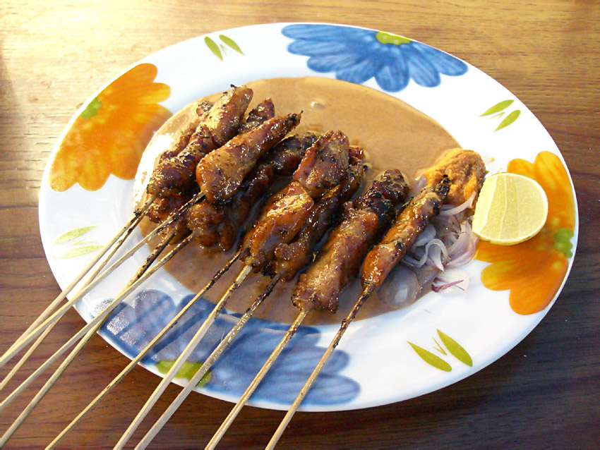

Sate

Description
Satay is a dish of seasoned, skewered, and grilled meat, which is often served with a peanut sauce. It is a popular dish in Indonesia and comes in various regional varieties. Chicken satay (Sate Ayam) is one of the most common types, but you can also find satay made from beef, lamb, and other meats. The meat is marinated in a mixture of spices and then grilled to perfection, resulting in a deliciously smoky and savory dish.
Ingredients
- For the Satay:
- 500 grams chicken breast or thigh, cut into small cubes
- 10-15 bamboo skewers (soaked in water for at least 30 minutes)
- Marinade:
- 3 cloves garlic, minced
- 2 shallots, minced
- 1 tablespoon coriander powder
- 1 teaspoon turmeric powder
- 2 tablespoons soy sauce
- 2 tablespoons sweet soy sauce (kecap manis)
- 1 tablespoon vegetable oil
- 1 tablespoon lime juice
- Salt and pepper to taste
- Peanut Sauce:
- 200 grams roasted peanuts
- 2 cloves garlic
- 2 red chilies (optional, for heat)
- 2 tablespoons palm sugar (or brown sugar)
- 1 tablespoon tamarind paste (or lime juice)
- 200 ml water
- 1 tablespoon sweet soy sauce (kecap manis)
- Salt to taste
Steps
- Prepare the Marinade:
- In a bowl, mix together minced garlic, minced shallots, coriander powder, turmeric powder, soy sauce, sweet soy sauce, vegetable oil, lime juice, salt, and pepper.
- Add the chicken cubes to the marinade and mix well to coat all pieces. Cover and let it marinate in the refrigerator for at least 1 hour, preferably overnight for better flavor.
- Prepare the Peanut Sauce:
- In a food processor or blender, combine the roasted peanuts, garlic, red chilies (if using), palm sugar, tamarind paste, and water. Blend until smooth.
- Transfer the mixture to a saucepan and cook over medium heat, stirring constantly until the sauce thickens, about 5 minutes.
- Add the sweet soy sauce and salt to taste. Adjust the consistency with more water if necessary. Set aside.
- Prepare the Skewers:
- Thread the marinated chicken pieces onto the soaked bamboo skewers, about 4-5 pieces per skewer.
- Grill the Satay:
- Preheat a grill or grill pan over medium-high heat. You can also use a charcoal grill for an authentic smoky flavor.
- Grill the skewers for about 2-3 minutes on each side, or until the chicken is fully cooked and slightly charred. Baste with a little oil or leftover marinade while grilling to keep the meat moist.
- Serve:
- Serve the satay hot off the grill, accompanied by the peanut sauce.
- Garnish with additional lime wedges and sprinkle with fried shallots if desired.
- Satay is often served with rice cakes (lontong) or plain steamed rice, and a side of fresh cucumber and onion slices.